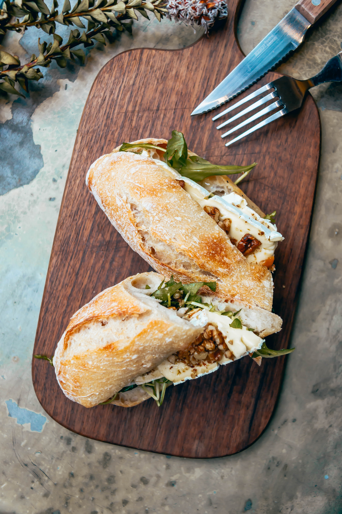

{{ h1 }}
Goleta is located west of Santa Barbara and north of Isla Vista. It is the home to many college students, families, and young adults! Located here are plenty of mom-and-pop shops with a variety of different cultural restaurants. The cuisine here varies from some the best burger places you'll ever eat at, to some the most delectable pho you'll come across after a long night with friends. Goleta is also only a few minutes away from the Santa Barbara Airport, making it a great destination for both locals and tourists to stop by.

Los Agaves
Los Agaves is known for their delicious and modern take on Mexican food! The restaurant was originally opened in Downtown Santa Barbara and has expanded throughout Southern California.

Kyle's Kitchen
Can't decide on whether to get a burger or a salad? Look no further because Kyle's Kitchen gives you the best of both worlds. Their gourmet burgers are like no others, their menu offers a wide selection for groups that prefer different meals.

Pickles & Swiss
Pickles & Swiss is one of Goleta's most loved sandwich restaurants. The unique menu provides customers to customize their most famous sandwiches! It is home to some of the most unique cold cuts you can get.